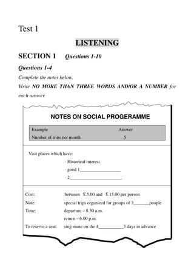
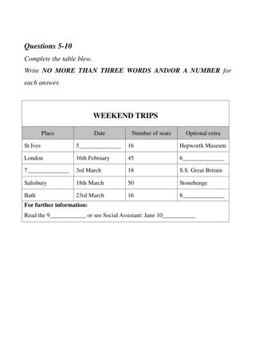
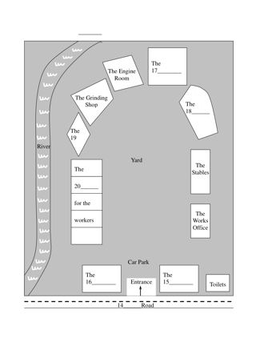
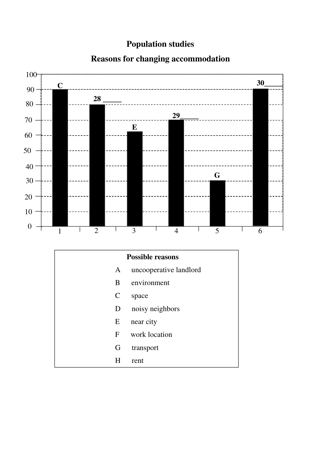
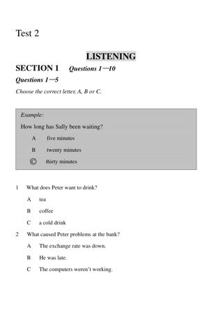
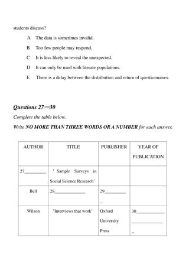
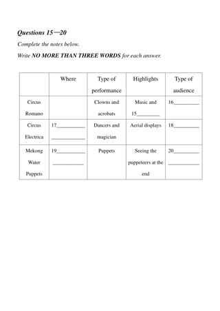
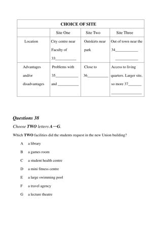
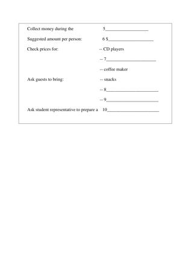
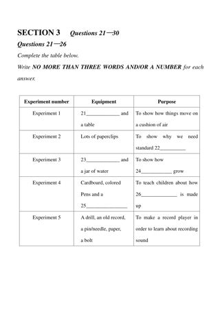

Listening visuals Cambridge 4Reviewed results: 122 confirmed issue records (86 duplicate pairs, 9 sequence inversions, 1 wrong-Part image, 26 clipped images); 23 suspected records. Counts overlap Parts/assets. Full reviewed CSV. Raw audit.json/findings.csv are detector output, not the final defect list. Fallback scope alone is not a defect. OCR ranges are incomplete hints.
All books · Cambridge 4: 16 Parts · exact current resolver outputCambridge 04 / Test 1 / Part 1
No confirmed/candidate defect detected; not a visual PASS
Q[1, 4]: 1, 2 [Part fallback]
Q[5, 10]: 1, 2

#1 OCR Q[[1, 10], [1, 4]] · 1191×1684
Test_1_Section_1_PDF_Page_001_NOTES_ON_SOCIAL_PROGERAMME.png
assets/public/5d5797fc540a6809abe3cc84e3e4b1c331f4c3a9be431d8bbe0984509705afca.png
asset-5d5797fc540a6809abe3cc84e3e4b1c331f4c3a9be431d8bbe0984509705afca
#2 OCR Q[[5, 10]] · 1191×1684
Test_1_Section_1_PDF_Page_002_WEEKEND_TRIPS_TABLE.png
assets/public/6fdc69064206de9950014eabdb5a957550ff8cf3e344ffd3e8b18c5c64c989c9.png
asset-6fdc69064206de9950014eabdb5a957550ff8cf3e344ffd3e8b18c5c64c989c9Cambridge 04 / Test 1 / Part 2
No confirmed/candidate defect detected; not a visual PASS
Q[11, 13]: 1 [Part fallback]
Q[14, 20]: 1

#1 OCR Q[] · 1191×1684
Test_1_Section_2_PDF_Page_004_RIVERSIDE_INDUSTRIAL_VILLAGE_MAP.png
assets/public/cf6f3bb8fe7b194730fbcd8f88aa9de8caea2e2dc826216be5218c611b30f3cd.png
asset-cf6f3bb8fe7b194730fbcd8f88aa9de8caea2e2dc826216be5218c611b30f3cdCambridge 04 / Test 1 / Part 3
No confirmed/candidate defect detected; not a visual PASS
Q[21, 22]: 1 [Part fallback]
Q[23, 27]: 1 [Part fallback]
Q[28, 30]: 1

#1 OCR Q[] · 1191×1684
Test_1_Section_3_PDF_Page_007_POPULATION_STUDIES_BAR_CHART.png
assets/public/d82ace27fb8d9e15330a215924aacdd31ebc8b8ef340b341d72c342a771d3944.png
asset-d82ace27fb8d9e15330a215924aacdd31ebc8b8ef340b341d72c342a771d3944Cambridge 04 / Test 1 / Part 4
No confirmed/candidate defect detected; not a visual PASS
Q[31, 40]: 1
#1 OCR Q[[31, 40]] · 1070×1394
cambridge-04-test-01-part-4.png
assets/public/46cf8087c6b2ecfce5c5cd182c3328477f898859e46ae4c65201c3fbcdfae06e.png
asset-46cf8087c6b2ecfce5c5cd182c3328477f898859e46ae4c65201c3fbcdfae06e Cambridge 04 / Test 2 / Part 1
No confirmed/candidate defect detected; not a visual PASS
Q[1, 5]: 1 [Part fallback]
Q[6, 8]: 1 [Part fallback]
Q[9, 10]: 1 [Part fallback]

#1 OCR Q[[1, 10]] · 1191×1684
Test_2_Section_1_PDF_Page_033_SAMPLE_MULTIPLE_CHOICE_FORMAT.png
assets/public/84bac291955080a49aa247d5350e74717c38cac0ea1b56b36f0d3fdc83d80798.png
asset-84bac291955080a49aa247d5350e74717c38cac0ea1b56b36f0d3fdc83d80798Cambridge 04 / Test 2 / Part 2
No confirmed/candidate defect detected; not a visual PASS
Q[11, 20]:
No rendered image; structured text only
Cambridge 04 / Test 2 / Part 3
No confirmed/candidate defect detected; not a visual PASS
Q[21, 24]: 1, 2 [Part fallback]
Q[25, 26]: 1, 2 [Part fallback]
Q[27, 30]: 1, 2
#1 OCR Q[[21, 30], [21, 24]] · 1191×1684
Test_2_Section_3_PDF_Page_038_DETAILS_OF_ASSIGNMENT_FORM.png
assets/public/91e55ddd2a082a1f55c8c62a41092a700a9bd0b7a0c8538267017ba67d00a89b.png
asset-91e55ddd2a082a1f55c8c62a41092a700a9bd0b7a0c8538267017ba67d00a89b
#2 OCR Q[[27, 30]] · 1191×1684
Test_2_Section_3_PDF_Page_039_ASSIGNMENT_BIBLIOGRAPHY_TABLE.png
assets/public/cdd9305f124af2e56abca78f003b0d71317fe0bd8b5419eb0fb506312dab8c7b.png
asset-cdd9305f124af2e56abca78f003b0d71317fe0bd8b5419eb0fb506312dab8c7b Cambridge 04 / Test 2 / Part 4
No confirmed/candidate defect detected; not a visual PASS
Q[31, 32]: 1 [Part fallback]
Q[33, 38]: 1 [Part fallback]
Q[39, 40]: 1 [Part fallback]
#1 OCR Q[[33, 38]] · 1191×1684
Test_2_Section_4_PDF_Page_041_CORPORATE_CRIME_NOTES.png
assets/public/6ad46291e13941cb25efd9592b32289e803e81bfa41e7977925580f00c5d2ce2.png
asset-6ad46291e13941cb25efd9592b32289e803e81bfa41e7977925580f00c5d2ce2 Cambridge 04 / Test 3 / Part 1
No confirmed/candidate defect detected; not a visual PASS
Q[1, 4]: 1
Q[5, 7]: 1 [Part fallback]
Q[8, 10]: 1 [Part fallback]
#1 OCR Q[[1, 10], [1, 4]] · 1191×1684
Test_3_Section_1_PDF_Page_064_ACCOMMODATION_REQUEST_FORM.png
assets/public/cac1df85e6a9f4f4369fc9c0ef89f44729a905075146132b4a5c1c5306646908.png
asset-cac1df85e6a9f4f4369fc9c0ef89f44729a905075146132b4a5c1c5306646908 Cambridge 04 / Test 3 / Part 2
No confirmed/candidate defect detected; not a visual PASS
Q[11, 14]: 1 [Part fallback]
Q[15, 20]: 1 [Part fallback]

#1 OCR Q[[15, 20]] · 1191×1684
Test_3_Section_2_PDF_Page_067_CIRCUS_PERFORMANCE_TABLE.png
assets/public/4ea40a41dd284f795640c14422c4a5cbb976779c02037be853360b006e92be54.png
asset-4ea40a41dd284f795640c14422c4a5cbb976779c02037be853360b006e92be54Cambridge 04 / Test 3 / Part 3
No confirmed/candidate defect detected; not a visual PASS
Q[21, 25]:
Q[26, 30]:
No rendered image; structured text only
Cambridge 04 / Test 3 / Part 4
No confirmed/candidate defect detected; not a visual PASS
Q[31, 32]: 1, 2 [Part fallback]
Q[33, 37]: 1, 2
Q[38, 38]: 1, 2 [Part fallback]
Q[39, 39]: 1, 2 [Part fallback]
Q[40, 40]: 1, 2 [Part fallback]
#1 OCR Q[[31, 40], [33, 37]] · 1191×1684
Test_3_Section_4_PDF_Page_071_NEW_UNION_BUILDING_NOTES.png
assets/public/9315de6a08003966fc0ea249fc7b0f932408ee7ed565c618a315d93971f6daad.png
asset-9315de6a08003966fc0ea249fc7b0f932408ee7ed565c618a315d93971f6daad
#2 OCR Q[] · 1191×1684
Test_3_Section_4_PDF_Page_072_CHOICE_OF_SITE_TABLE.png
assets/public/f67fe4e6288c1de06836ed9883b7c911da421256199663e6dec32ba1d37ba630.png
asset-f67fe4e6288c1de06836ed9883b7c911da421256199663e6dec32ba1d37ba630 Cambridge 04 / Test 4 / Part 1
No confirmed/candidate defect detected; not a visual PASS
Q[1, 10]: 1, 2 [Part fallback]
#1 OCR Q[[1, 10], [1, 10]] · 1191×1684
Test_4_Section_1_PDF_Page_098_GOODBYE_PARTY_NOTES_1.png
assets/public/b4c39457d4fbb547a7f489d81e824818b0a6423d396b2cc3b8fba3295e174b25.png
asset-b4c39457d4fbb547a7f489d81e824818b0a6423d396b2cc3b8fba3295e174b25
#2 OCR Q[] · 1191×1684
Test_4_Section_1_PDF_Page_099_GOODBYE_PARTY_NOTES_2.png
assets/public/eca7349c8c56dea021b40b19ef2990e35caae2fa17cec8354e3a8ca990718c76.png
asset-eca7349c8c56dea021b40b19ef2990e35caae2fa17cec8354e3a8ca990718c76 Cambridge 04 / Test 4 / Part 2
No confirmed/candidate defect detected; not a visual PASS
Q[11, 15]: 1 [Part fallback]
Q[16, 20]: 1
#1 OCR Q[[16, 20]] · 1191×1684
Test_4_Section_2_PDF_Page_101_HOLIDAY_COSTS_TABLE.png
assets/public/266397e7c082ebaf36bbe83d1b5c3d7ab0720e6bad5b45a4c7cb8529b83db48f.png
asset-266397e7c082ebaf36bbe83d1b5c3d7ab0720e6bad5b45a4c7cb8529b83db48f Cambridge 04 / Test 4 / Part 3
No confirmed/candidate defect detected; not a visual PASS
Q[21, 26]: 1
Q[27, 30]: 1 [Part fallback]

#1 OCR Q[[21, 30], [21, 26]] · 1191×1684
Test_4_Section_3_PDF_Page_102_EXPERIMENTS_TABLE.png
assets/public/7203d3f9aba872d70a43b79e40ab526d6458205b037dfe3cd97cf27c24097f11.png
asset-7203d3f9aba872d70a43b79e40ab526d6458205b037dfe3cd97cf27c24097f11Cambridge 04 / Test 4 / Part 4
No confirmed/candidate defect detected; not a visual PASS
Q[31, 34]: 1 [Part fallback]
Q[35, 38]: 1 [Part fallback]
Q[39, 40]: 1 [Part fallback]
#1 OCR Q[[31, 40], [31, 34]] · 1191×1684
Test_4_Section_4_PDF_Page_104_SHARKS_IN_AUSTRALIA_NOTES.png
assets/public/4d0a53b4ad01e67f11ccaba0476c075d99327e4a9be8c5f3868d28c5e26774dd.png
asset-4d0a53b4ad01e67f11ccaba0476c075d99327e4a9be8c5f3868d28c5e26774dd